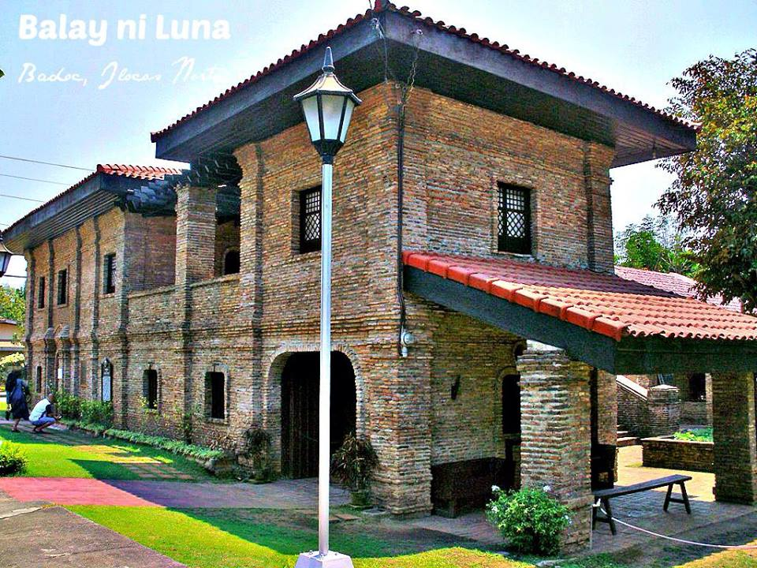
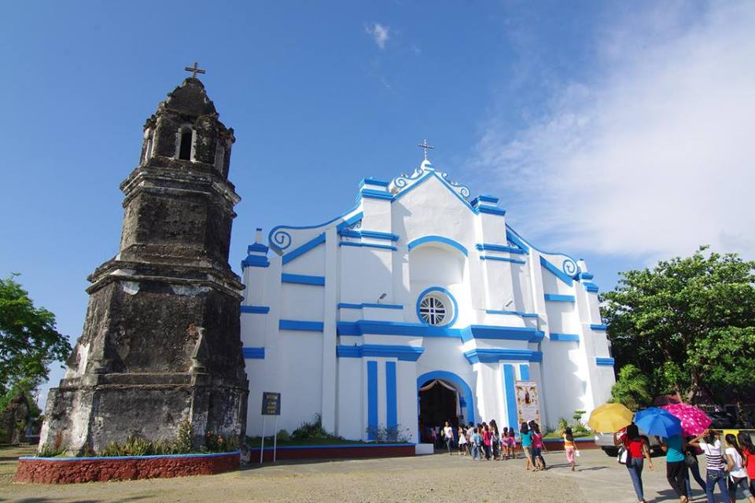
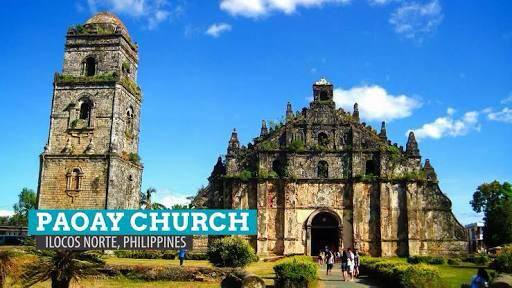

SAR - AY


Juan Luna Shrine Juan Luna is a famous artist and political activist in the 19th century. He is the creator of the infamous Spoliarium. The shrine is located in Badoc, Ilocos Norte. It is where the Luna family home used to be erected. The original ancestral home was burned down in 1961 and was reconstructed to honor the life of the very talented artist. The Main entrance leads to a gallery of hallways with vintage photographs. It also has letters written by the artist and other painting materials and some of his clothes. The staircase leads to the living room, bedrooms, azotea and a mini chapel. The master bedroom contains the four-posted bed used by Luna. Outside the house is a brick well, an antique carriage and Juan Luna's monument.
La Virgen Milagrosa Shrine of Badoc Badoc is the located at the southernmost town of the province of Ilocos Norte at a distance of about 40 kilometers south of Laoag City. The parish, known as St. John the Baptist Parish, was established in 1714. The brick and stone baroque structure houses La Virgen Milagros de Badoc, a miraculous wooden image of the Virgin Mary with the infant Jesus wrapped in her arms which is estimated to be 400 years old. It is said that because of countless miracles of the image, many have developed a very intense and widespread devotion.
Pinili, although a small town, played an important role in the history of the Philippines. The Iloko word Pinili means chosen. The town was called Pinili because Gen. Gregorio Aglipay has chosen the town as his training ground and hideout, taking advantage of its mountainous state. And a statue was erected in his honour. Pinili is an agricultural town and its main crops are rice and corn. Other crops are grown like garlic, onion and vegetables. And the town houses uranium deposits in a few barangays. The Municipal Park of Pinili is one of the tourist attractions in town. The rich natural resources of the town is shown through the forest trees and verdant fields. Pinili Town Fiesta and Agro-Industrial Fair. This is a thanksgiving event in honor of St. Isidore de Farmer, the town's patron saint.
"Malacanang ti Amianan" in the local dialect, was the official residence of the former president Ferdinand Marcos. It stands on a high point overlooking the legendary Paoay lake. Both the exterior and the interior of the palace can give a very strong impression of how regal the lives of the former residents were. It is now a well-maintained museum open for public viewing.
Paoay Church Paoay Church is a UNESCO World Heritage Site. It was built with a combination of Baroque, Gothic and Oriental architectural designs and is made of coral stones and bricks. The church was partially destroyed twice by earthquakes in 1706 and 1927. The sides are supported by giant buttresses. The facade is divided vertically by square pilasters that extend from the ground and all the way to the top of the pediment. On the right side of the facade is the bell tower which is a significant element in most colonial churches both for practical function and aesthetics. This is a picture perfect site, usually complimented by the clear blue skies that is always featured in many magazines, blogs and others.
Sitio Remedios Heritage Village Sitio Remedios is located in Barangay Voctoria, Currimao Ilocos Norte. The private village resort facing the South China Sea has houses/villas made from vintage bricks and wood salvaged from old structures in Ilocos Norte. There is a small stone chapel inside that looks like a miniature version of the grand cathedrals around the province.
St. William's Cathedral & Sinking Bell Tower The cathedral, also known as Laoag Cathedral was originally a wood and thatch church founded by the Augustinian friars. The structure now has a 2-storey cream facade with an earthquake baroque architecture with Italian Renaissance design. 85 meters away from the cathedral is the Bantay Bell Tower, more popularly called the Sinking Bell Tower. It is built on earthquake baroque architecture as well and is one of the highest structures built in the province at 45 meters in height. It is said that in the olden times, a man riding a horse could easily pass thru its doors. Nowadays, a person of average height would have to stoop to enter. The tower entrance has been closed to avoid any accidents.